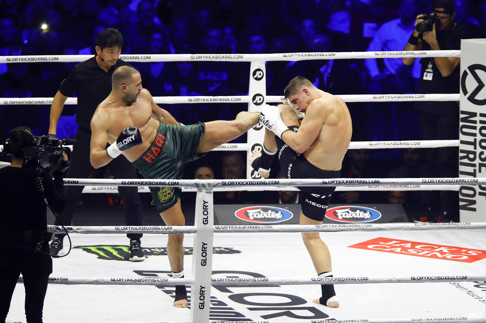

Kickboksen
Home
Cat
Contact

Kickboksen is een vechtsport waarbij zowel de handen als de benen mogen worden gebruikt.
De sport kent zijn oorsprong in Japan en de Verenigde Staten, en werd daar populair in het begin van de jaren 1970.
Bij kickboksen worden de stoten van het boksen gecombineerd met de trappen uit sporten zoals karate en taekwondo.